What this module does, and what it needs
You need Odoo 19, Community or Enterprise, and WT Salon Management installed. Install this module from Apps; it adds new items to the existing Salon menu rather than a second app, so your staff keep working in the one place.
After installing you will find, under the Salon menu: KPI Dashboard, Loyalty (Program Setup, Customer Cards, Points Transactions), Packages (Package Templates, Customer Packages), Memberships (Membership Plans, Customer Subscriptions), Gift Cards, Reviews, Waitlist, My Day, and under Configuration, Consent Form Templates and Customer Notes. The appointment form you already use gains five new tabs: Enterprise, Stylist Notes, Photos, Products Used and Consent Forms.
Do you need this on top of the base module
The two are sold separately and at very different prices, so here is the honest line between them, feature by feature. If nothing in the right hand column is something you would use, the base module on its own is the right purchase.
| What you want to do | Base module (Salon Management) | This add-on |
|---|---|---|
| Book an appointment, move it through the day, invoice it | Yes | Uses the same appointment |
| Service catalogue, prices, durations, stylists | Yes | Unchanged |
| Online booking on your website | Yes | Adds points, packages and a deposit to the same portal |
| Stylist commission and sales targets | Yes | Unchanged |
| Consume stock per service through a bill of materials | Yes | Adds a free text Products Used list for what the BoM does not cover |
| Thermal receipt and invoice | Yes | Adds the deposit, gift card, points and package lines to the invoice |
| Give points for spending, in tiers | No | Yes, four tiers, a QR card, and points that can be spent |
| Sell ten sessions up front and count them down | No | Yes, and the session is not charged again |
| Sell a monthly membership with a minimum term | No | Yes, and the term is enforced |
| Sell and redeem gift cards | No | Yes, with balance, expiry and a refusal to overspend |
| Take a deposit at booking and show the balance due | No | Yes, including on the invoice |
| Collect and moderate customer reviews | No | Yes |
| Keep a waitlist and call somebody when a slot frees | No | Yes, automatically on cancellation |
| Digital consent forms with a signature | No | Yes |
| Before and after photos per visit | No | Yes |
| Colour formula and notes that follow the customer | A single free text note on the customer | Yes, typed notes with a date, plus a per visit formula and a history card |
| An owner's dashboard of collected money, occupancy and ratings | No | Yes |
| Compare how long a service took against its estimate | No | Yes |
| Automatic reminders, review requests, birthday and win-back emails | No | Yes |
| Referral bonus points | No | Yes |
Put the other way round: the base module runs the day. This add-on is what makes a customer come back, and it is where the money that is not a straight cash sale is handled. A gift card, a deposit, a pre-paid package and burned points are four different ways of a customer having already paid, and each of them has to reach the invoice correctly or the salon is either out of pocket or billing twice. That is what this module does and it is why it costs what it costs.
Before you start
If you install with demo data on, you get the demo salon both modules share, Bloom & Blade Salon: six stylists, a full diary, twelve loyalty cards across all four tiers, three packages part used, five memberships, three gift cards, nine reviews, four people on the waitlist, signed consent, before and after photos and deposits already taken. That is what every screenshot here shows.
A real database normally installs without demo data, so your screens open empty and you fill them using the steps below. Nothing here needs a consultant.
Turning the features on
Open Settings and scroll to the Salon section. Every part of this module has a switch, and a switch that is off means the feature does nothing at all. Out of the box, Loyalty Points Program, Service Packages, Gift Cards, Customer Reviews and Appointment Waitlist are on; memberships, deposits, consent forms, photos, SMS, WhatsApp, the referral bonus and the win-back campaign are off until you turn them on.
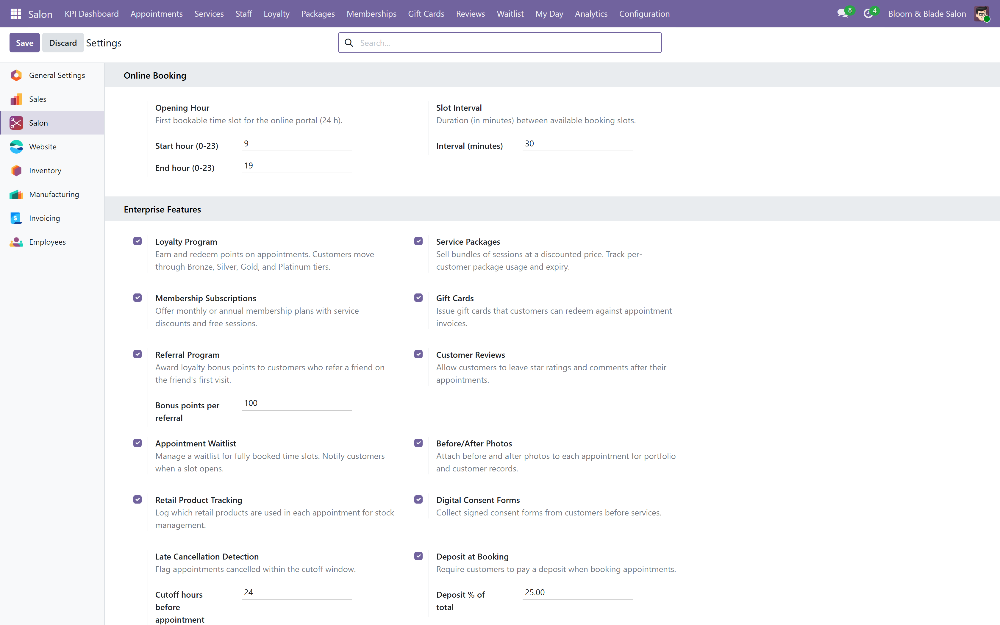
The ones worth knowing about on day one:
- Loyalty Points Program: master switch for points.
- Service Packages, Gift Cards, Memberships: the three pre-paid products.
- Deposit Required and Deposit %: when on, confirming a booking works out the deposit automatically.
- Customer Reviews: shows the review request and the moderation queue.
- Appointment Waitlist: when on, cancelling a booking calls the first person waiting for that day.
- Referral Bonus Points: how many points a customer earns for bringing somebody new in.
- Max Daily Capacity: how many appointments a full day is, used for the occupancy figure on the dashboard.
The loyalty programme: rates and tiers
Open Salon > Loyalty > Program Setup and open the program. Two numbers decide everything:
- Points per Currency Unit: points earned for each unit spent. At 2, a 300 bill earns 600 points.
- Points to Redeem 1 Currency Unit: how many points buy one unit of discount. At 40, those 600 points are worth 15.
Together they set what you are giving away. The demo salon runs 2 and 40, which is five per cent back.
The Tiers tab holds the ladder. Each tier has a Min Lifetime Points, a Tier Discount (%) and a badge colour. A customer sits in the highest tier their lifetime points reach.
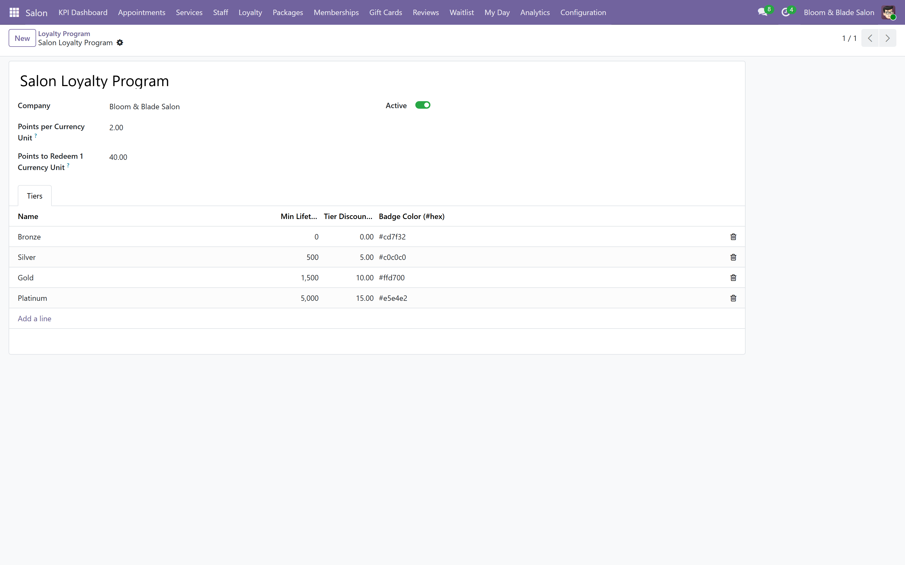
A customer earns points
You do nothing. When an appointment is invoiced, the module opens a loyalty card for that customer if they do not have one, and posts the points. Open Salon > Loyalty > Customer Cards to see every card, with the current balance, the lifetime total and the tier.
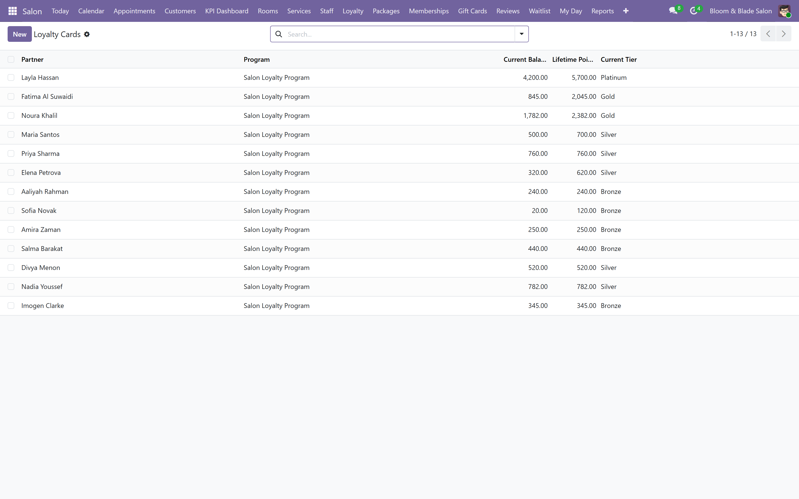
Open a card to see the card number, the QR code your staff can scan, and every transaction behind the balance.
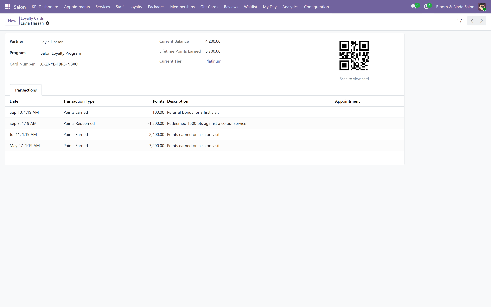
Every movement is a row in Salon > Loyalty > Points Transactions, of one of five kinds: Points Earned, Points Redeemed, Redemption Returned (a cancelled visit giving the points back), Manual Adjustment (your correction) and Points Expired.
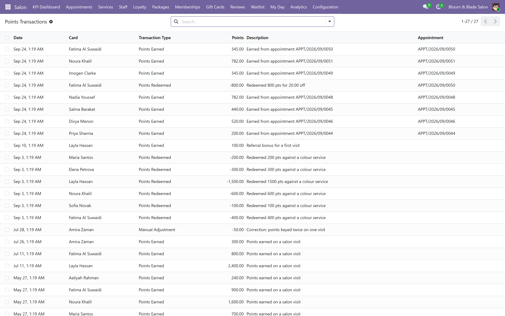
Spending points at the desk
Open the appointment and press Redeem Points in the button row at the top right. A dialog shows the points available, you type how many to burn, and it shows the discount that buys. Confirm, and the discount lands on the ticket as Loyalty Discount.
The refusals are deliberate: more points than the card holds is refused, and so is a redemption worth more than the bill. A customer cannot be credited more than they owe.
Selling a package
A package is a bundle of sessions paid for up front. Open Salon > Packages > Package Templates and press New:
- Sessions Included: how many visits the bundle is worth.
- Price: what the customer pays for the bundle.
- Validity (days): how long they have to use it. 0 means no expiry.
- Linked Product: the product used to invoice the bundle itself.
- Included Services tab: which services count as a session. Leave it empty and any service counts.
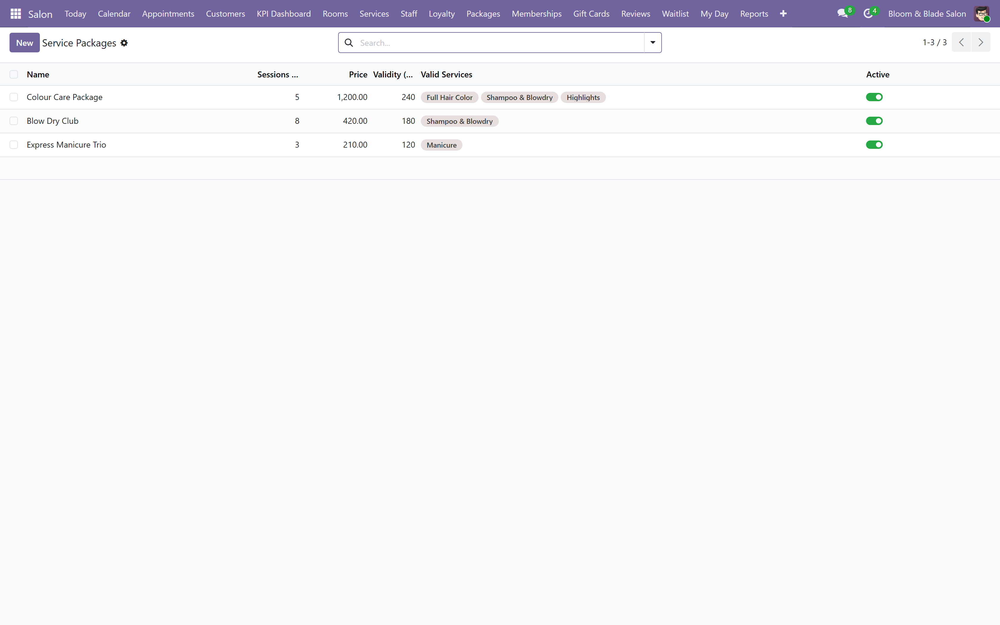
To sell one, open Salon > Packages > Customer Packages, press New, pick the customer and the package, and set the purchase date. The expiry date works itself out.
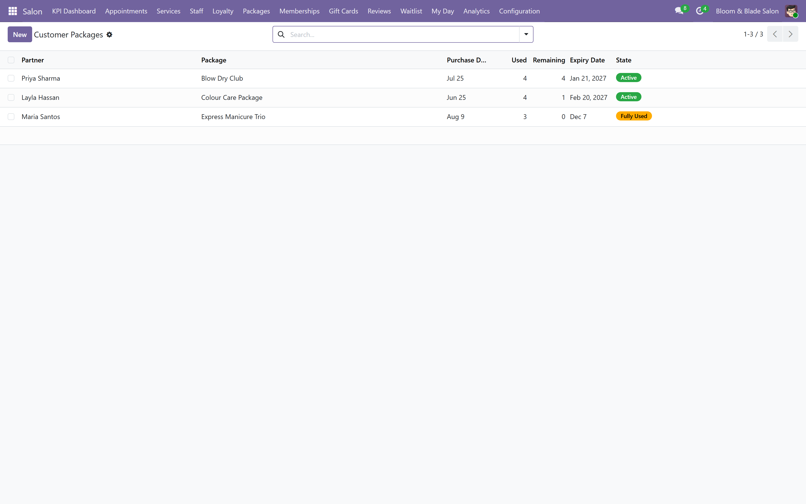
Using a package session
On the appointment, open the Enterprise tab and pick the customer's package in Service Package. Only that customer's active packages are offered.
Three things then happen. The visit counts as a session used. The value of the services the package covers shows as Covered by Package, and the Balance Due drops by the same amount, because the customer already paid for that session. And if the ticket also carries something the package does not cover, only that part is billed.
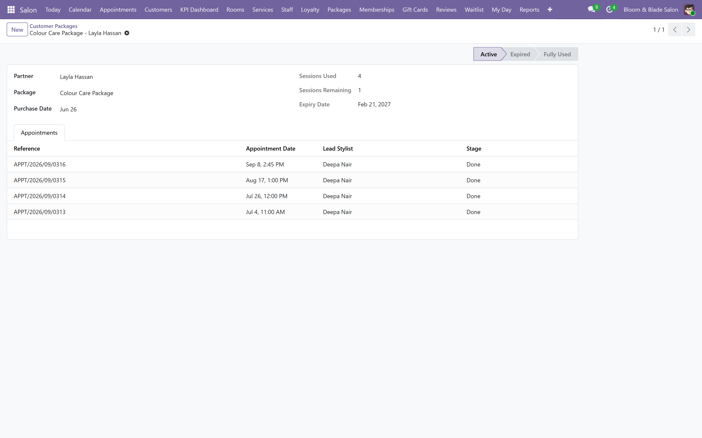
A package with no sessions left is refused, by name, when you try to put it on another booking. It cannot be driven below zero.
Memberships, and the minimum term
Open Salon > Memberships > Membership Plans and press New:
- Monthly Price, Duration (Months): the plan.
- Minimum Term (Months): how long the member is committed for. Leave it at 0 for a plan they can leave whenever they like.
- Service Discount (%) and Free Services / Month: the benefits.
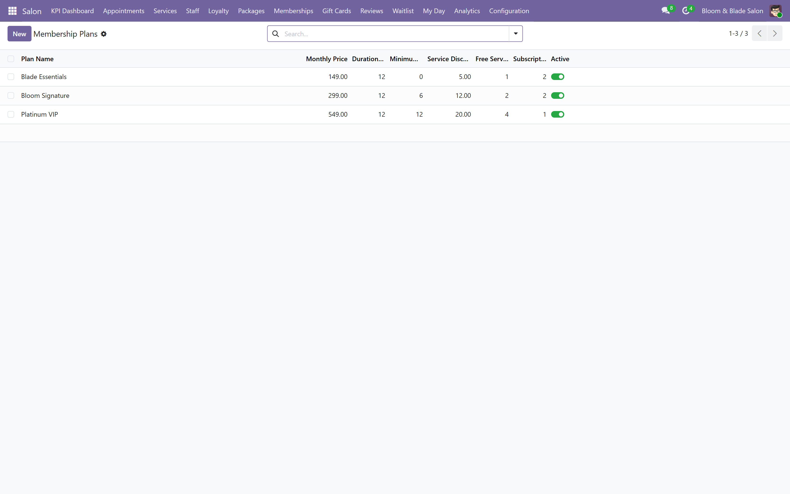
Sell one from Salon > Memberships > Customer Subscriptions. The subscription shows Committed Until and Inside Minimum Term.
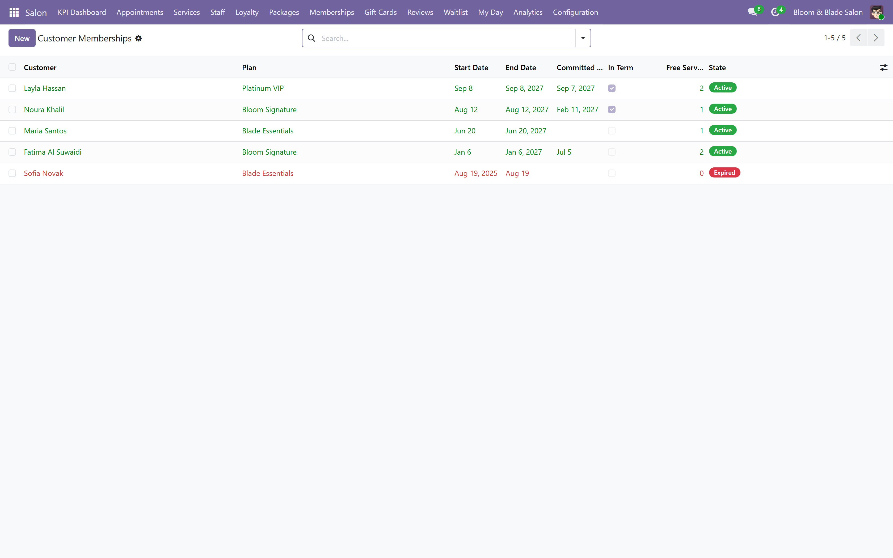
Pressing Cancel on a subscription that is still inside its minimum term is refused, and the message names the date the commitment ends. A manager, and only a manager, can tick Early Exit Approved with a reason, and then the cancellation goes through. The exception is recorded on the subscription instead of being an argument at the front desk.
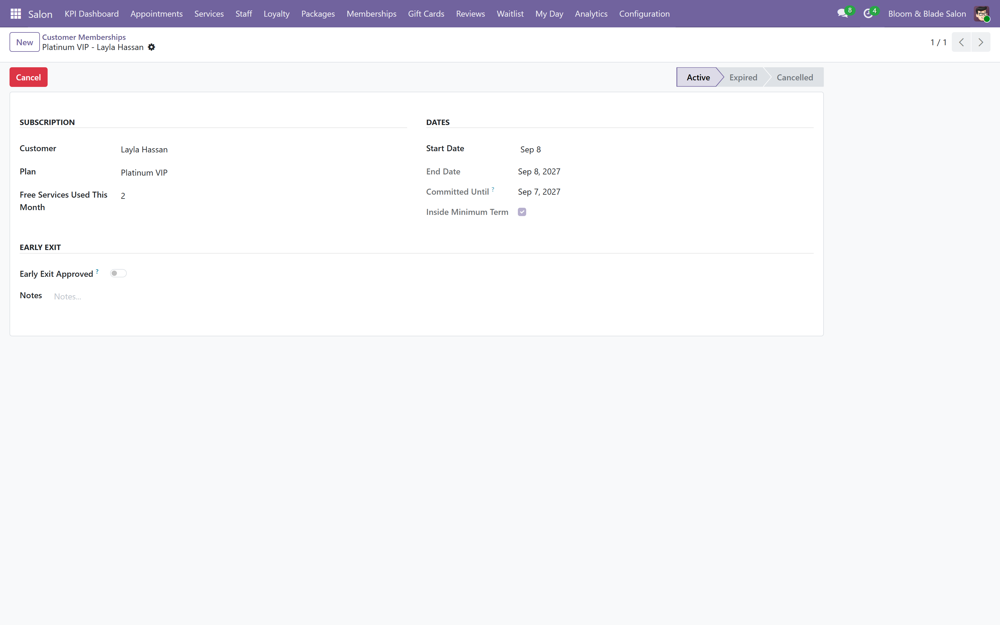
Gift cards
Open Salon > Gift Cards and press New. A code is generated for you, or type your own; two cards cannot share a code. Fill in Initial Value, who bought it, who it is for and an Expiry Date.
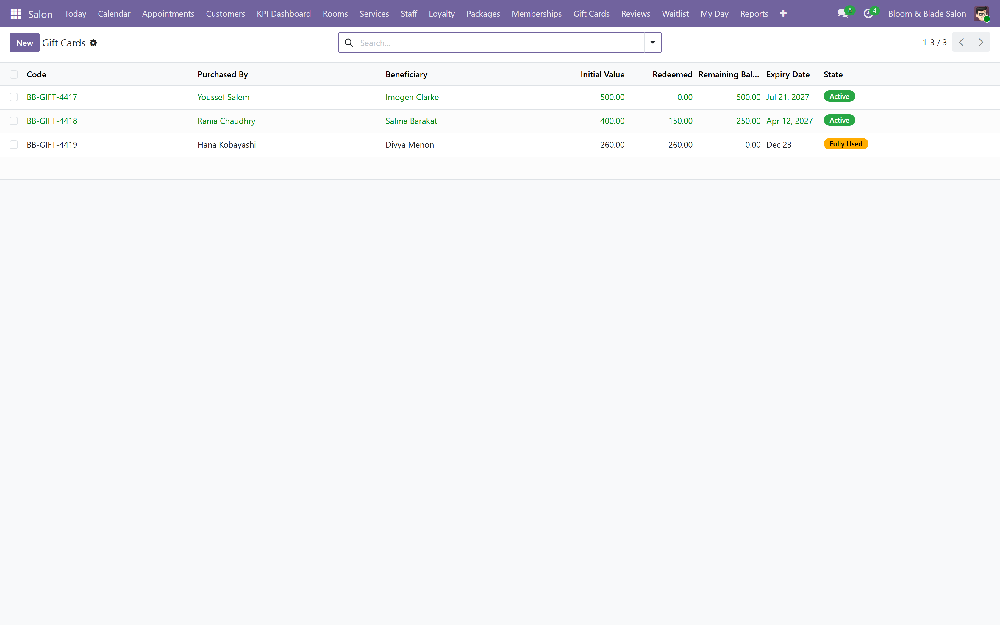
To redeem one, open the appointment, go to the Enterprise tab, pick the Gift Card and type the amount to take off this visit. The balance updates, the Balance Due drops, and the card flips to Fully Used when nothing is left.
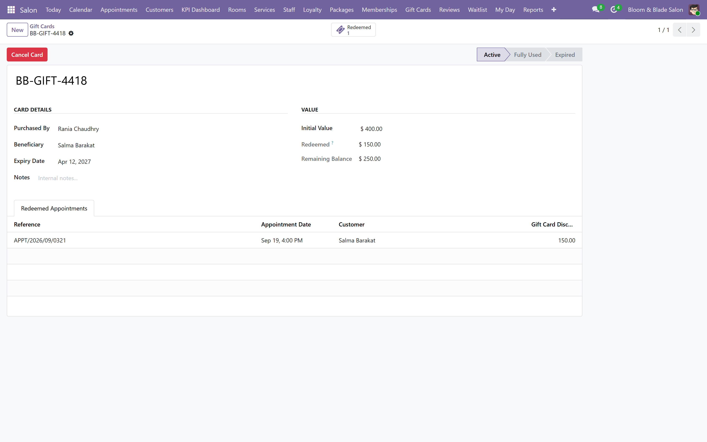
Four refusals you can rely on: more than the card has left, a card past its expiry date, a cancelled card, and more than the bill itself. And if the visit is cancelled, the amount goes back on the card so it can be spent next time.
Taking a deposit at booking
Turn on Deposit Required and set Deposit % in Settings. From then on, confirming a booking works out the deposit and puts it in Deposit Amount on the Enterprise tab. Nothing is collected yet: the figure is what to ask for.
When the customer pays it, press Mark Deposit Paid. The date is recorded and the Balance Due drops by the deposit.
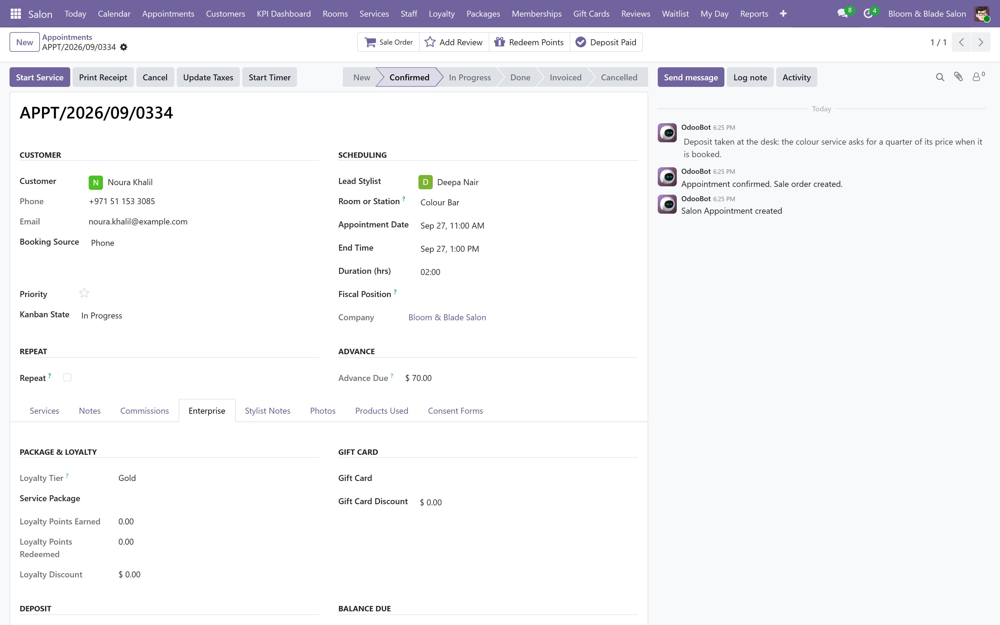
When you invoice the visit, the deposit goes onto the invoice as its own line, so what the customer is asked for is the balance and not the whole bill again.
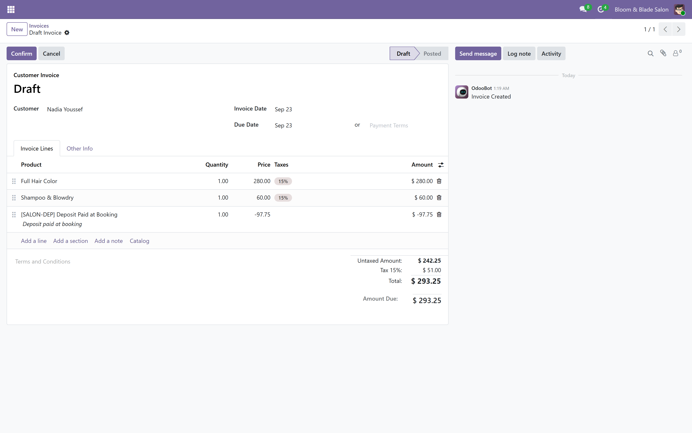
If the invoice has already been posted when the deposit lands, the module refuses to touch it and tells you to register the deposit as a payment against that invoice. A posted invoice is never edited behind your back.
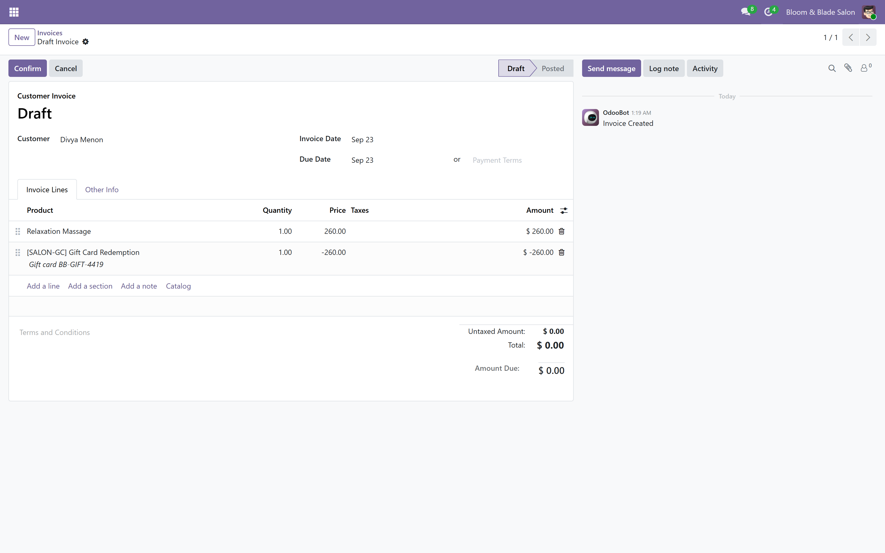
What the customer still owes
This is the one screen to learn. On the Enterprise tab of any appointment:
| Field | What it means |
|---|---|
| Total (top of the form) | What the services cost |
| Covered by Package | Value of the session the customer pre-paid |
| Gift Card Discount | Taken off with a gift card |
| Loyalty Discount | Bought with points |
| Deposit Amount + Deposit Paid | Collected when the booking was made |
| Already Covered | The four above, added up |
| Balance Due | The total less Already Covered |
| Carried onto Invoice | How much of that has already reached an invoice |
Nothing is ever credited beyond the total: if the four together come to more than the bill, the save is refused and the message says by how much.
Before and after photos
Turn on Before/After Photos in Settings. On the appointment, open the Photos tab, press Add a line, choose Before or After, upload the photo and write a caption. The appointment form grows a Photos button in the top right showing the count.
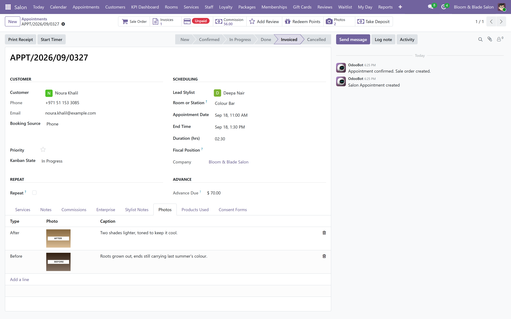
Consent forms
Write the wording once, in Salon > Configuration > Consent Form Templates. Require for New Customers marks the ones your staff should always get signed.
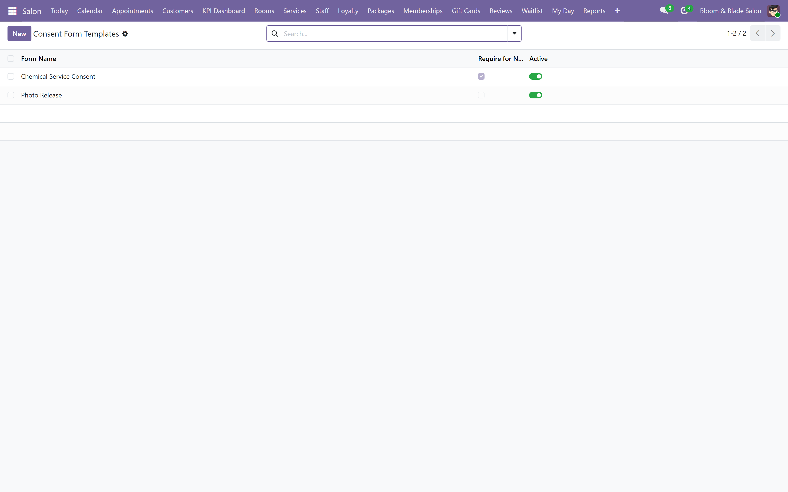
On the appointment, open the Consent Forms tab, add a line, pick the form, type the customer's name in Signed By and tick Signed. The date and time are recorded for you.
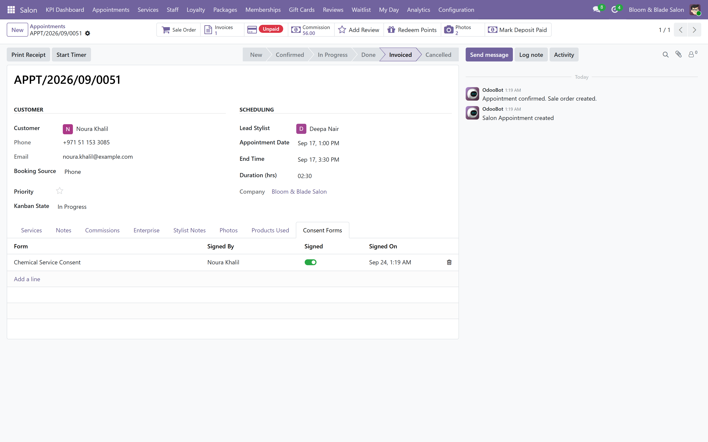
Notes that follow the customer
Two places, for two different things.
The Stylist Notes tab on the appointment is about this visit: what was asked for, and the Colour Formula / Product Notes that produced it. Underneath, Customer History shows the last three visits with their notes and formulas, so the stylist does not have to go looking.
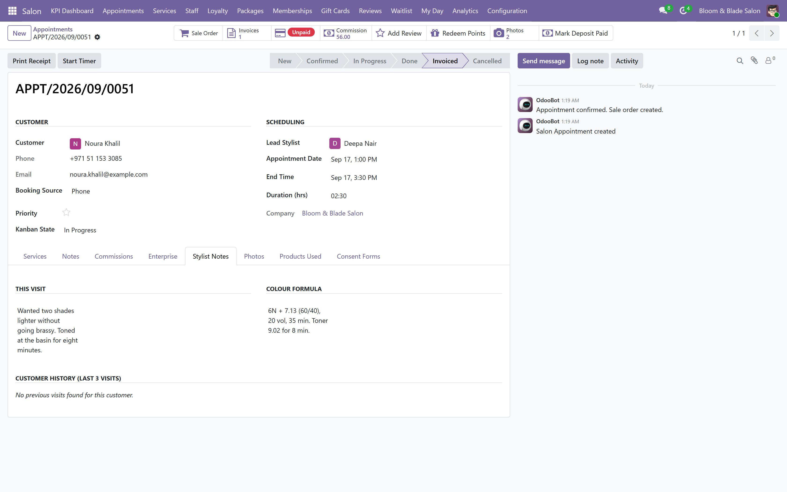
Salon > Configuration > Customer Notes is about the person, not the visit: an allergy, a preference, a medical note, a colour formula. Each note has a type and a date and stays on the customer's record for good. They also show on the customer's own Salon tab.
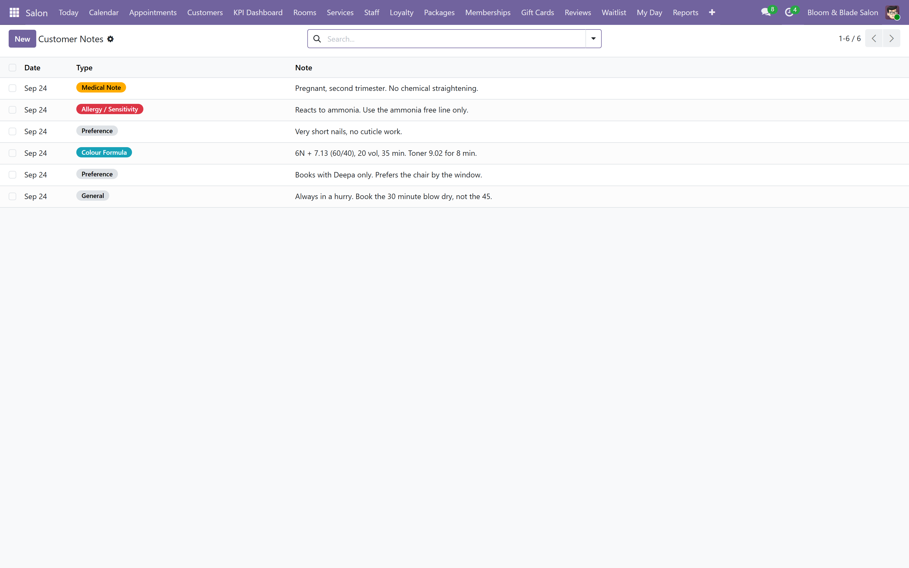
Everything this module knows about a customer is on one tab of their contact record: points, tier, packages, memberships, notes, birthday and who referred them.
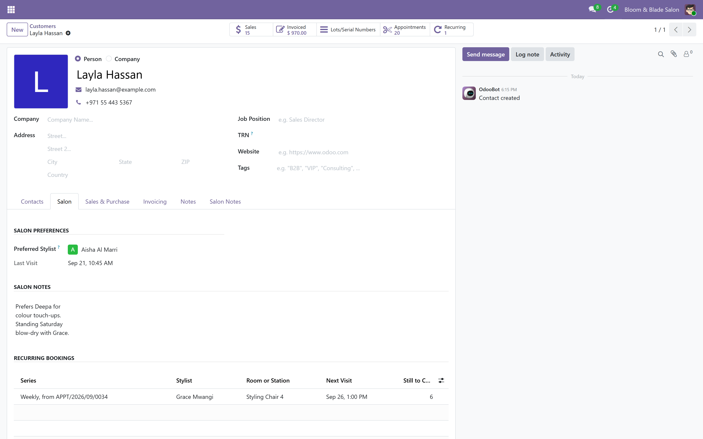
Reviews, and the moderation queue
With Customer Reviews on, a review request email goes out a few hours after a visit is invoiced, and reviews arrive at Salon > Reviews as Pending Review. Nothing is published until you say so.
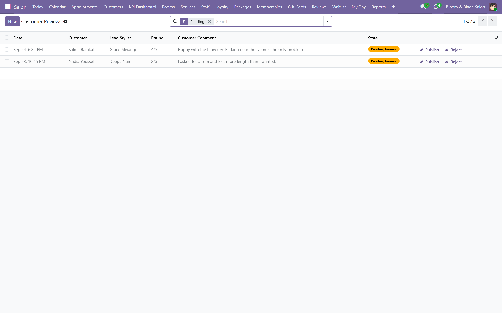
A rating is one to five stars, and one review per appointment. The average rating on the dashboard counts published reviews only, so an unmoderated one star does not pull your figure down before you have even read it.
The waitlist
When a customer wants a day that is full, put them on the waitlist instead of turning them away. Open Salon > Waitlist, press New, and record the customer, the Preferred Stylist if they have one, the services they want, the Preferred Date and the window of time that suits them.
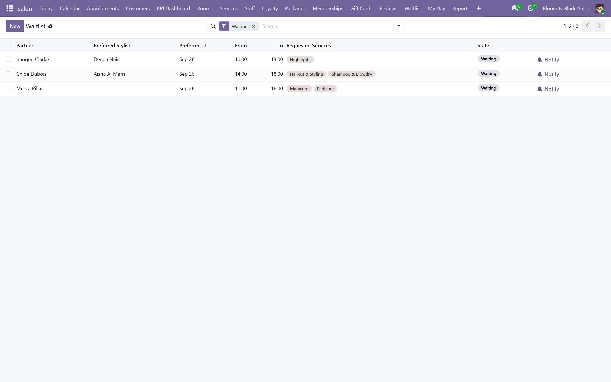
Two things then happen.
When a booking on that day is cancelled, the module notifies the first person who asked, and their entry moves to Notified. Somebody who asked for a different stylist is not called for that slot, because that is not the appointment they wanted.
And when you have them on the phone, press Book This Slot. The appointment is created from the services and the time they asked for, linked back to the waitlist entry, and the entry moves to Booked. The same entry cannot be booked in twice.
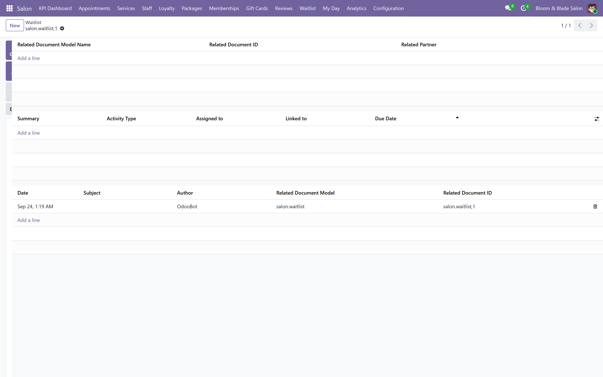
Entries whose day has gone by expire on their own overnight.
The owner's dashboard
Open Salon > KPI Dashboard. Set the period at the top; it opens on the current month.
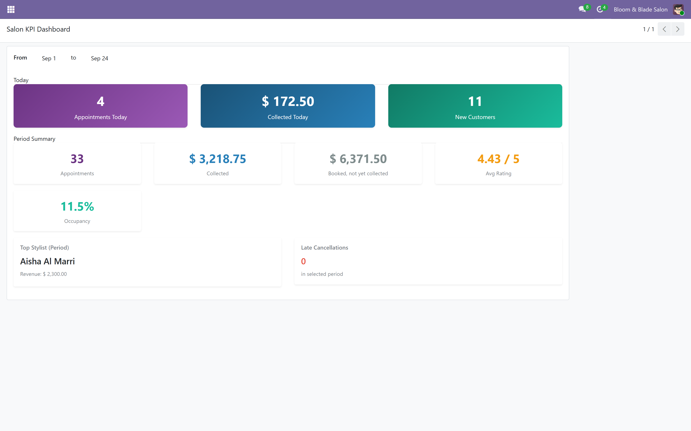
The Today row across the top is the day you are reading it on, in your own timezone, so on a demo database opened a week after it was built those three tiles read zero while the period below still has its figures. On your own salon's database they fill up as the day goes on.
The two money figures are deliberately separate:
- Collected is money actually received, read from posted invoices less whatever is still outstanding on them. A part payment counts for what was paid and not a unit more.
- Booked, not yet collected is the rest of the diary's value.
An appointment that has not been invoiced, or invoiced but not paid, contributes nothing to Collected however full the day looks. This is the figure to use when working out anybody's share of takings.
The rest: Appointments in the period, Avg Rating from published reviews, Occupancy against the Max Daily Capacity you set in Settings, the Top Stylist by money collected, and the count of Late Cancellations.
How long a service really takes
A stylist can press Start Timer when they begin and Stop Timer when they finish, from the appointment header. Salon > Analytics > Service Duration then lists the actual against the booked duration.
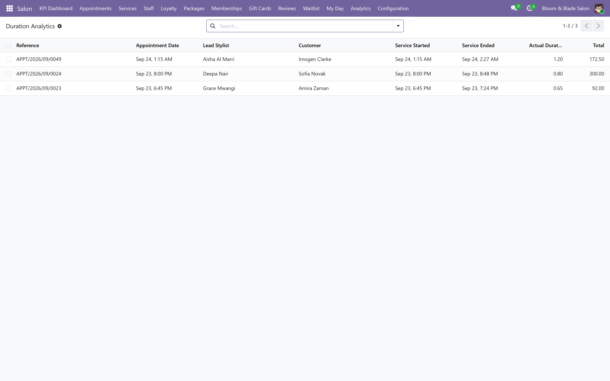
Salon > My Day gives a stylist today's appointments, theirs only, which is the screen to leave open on the floor.
What the customer sees online
The base module's booking portal gains this module's own pages: the customer's points balance and tier, their packages with sessions left, their appointments with a Book Again and a Reschedule, and the deposit to pay at the point of booking. If you have entered Stripe keys in Settings, the deposit can be taken online as the booking is made.
The screens this module does not give you
Everything above is the add-on. The screens below come from WT Salon Management, the module this one requires, and they are shown so the whole system is in one place. If you do not already own the base module, these are what you are buying first.
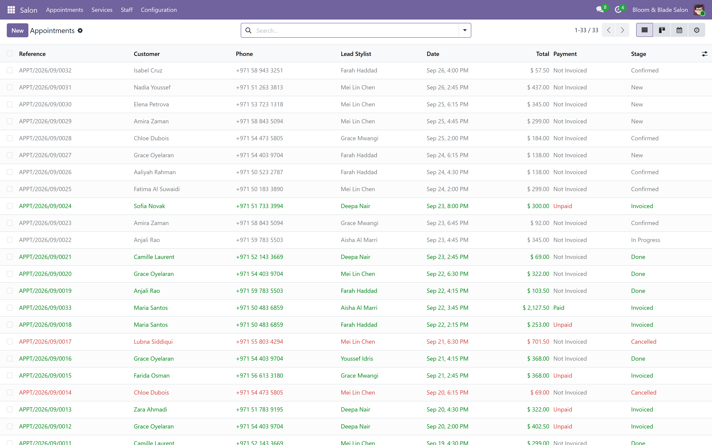
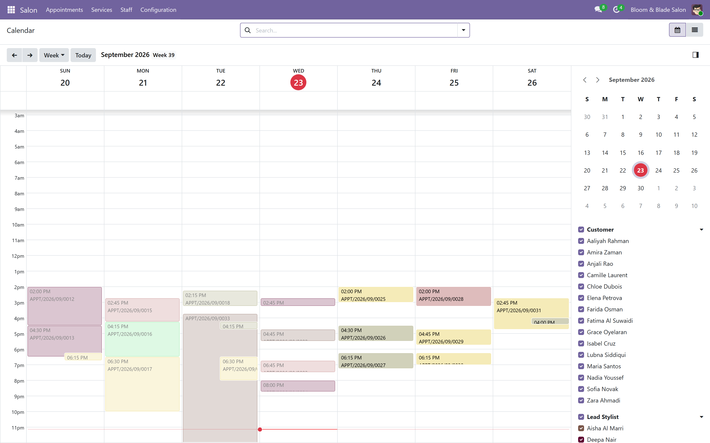


What this module does not do
Said plainly, so nothing is a surprise after you buy it.
- It is not a salon system on its own. Without WT Salon Management there are no appointments for any of this to attach to.
- It does not sell packages, memberships or gift cards through the website. Those are sold at the desk; the customer sees what they own in the portal, but cannot buy more there.
- It does not take the membership's monthly payment. The plan holds the price and the term; collecting the monthly fee is a subscription or a standing order you run yourself.
- It does not pay commission. The base module calculates it and this one can confirm and mark it paid on a schedule; the actual payment, through payroll or a transfer, is still yours to make.
- It does not post a gift card as a liability in the accounts. A redemption reaches the invoice as a line that reduces what the customer owes. If your accountant wants gift cards carried as deferred income, that is a journal entry they make.
- It does not refund a deposit. If a customer cancels, the deposit stays recorded as paid and refunding it is a normal Odoo refund.
- It does not send WhatsApp on its own. WhatsApp messages need your own Meta Cloud API token and phone number id, entered in Settings.
- It does not moderate reviews for you. Nothing is published until a person presses Publish.
Common questions
---
Salon Loyalty, Packages and Memberships for Odoo 19 Community and Enterprise, by Way4Tech. An add-on to WT Salon Management. Support terms and contact details are on the module's Apps Store listing page.